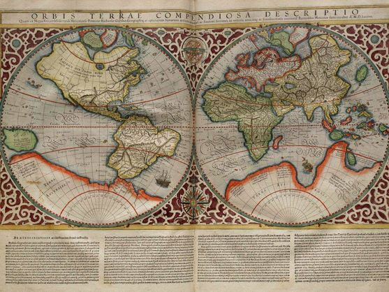
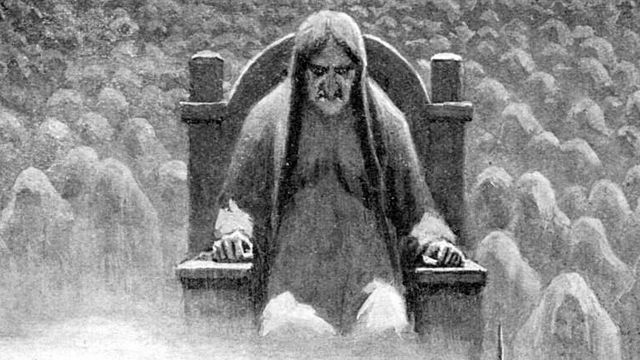
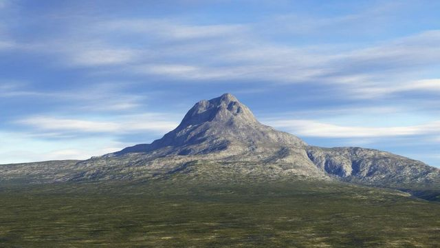

TIERRAS RECÓNDITAS
Ávalon, la Tierra Media y otros lugares legendarios que no existen (aunque te gustarían)
Las leyendas sobre estos sitios siguen formando parte del imaginario colectivo, quizá porque no sabemos si realmente se basaron en zonas reales
Por Ada Nuño
13/09/2022 - 05:00
Inventaba Italo Calvino un montón de sitios imaginarios en sus 'Ciudades invisibles', porque desde el principio de los tiempos los lugares legendarios han formado parte de la psique de los individuos, tejiéndose frente al fuego junto con otras historias fantásticas. Esos sitios a los que acudir cuando pensamos en la otra vida, las riquezas imposibles o los paraísos exóticos lejanos.
Desde Camelot a las lejanas tierras de Oriente, como todos aquellos lugares que aparecían en los mapas y nunca existieron, las leyendas sobre estos sitios siguen formando parte del imaginario colectivo. Quizá porque ahí queda siempre la duda de en qué lugares reales se basan o si tal vez existieron en algún momento pasado.
Ávalon
El nuevo paraíso, tras la expulsión del primigenio por culpa del fruto prohibido. Eso sería Ávalon, la tierra de las hadas o de las manzanas. Aparecida entre las brumas de los pantanos, sin que se sepa exactamente su localización (de la isla de Man a Glastonbury o incluso algunos hablan de Mallorca), aparece en la saga del rey Arturo y sus orígenes se remontan a la mitología celta, aunque el portador de Excálibur le dio más popularidad.
En ella habitan nueve reinas hadas (incluida la famosa Morgana) y los manzanos dan fruta todo el año. El cuerpo de Arturo descansa, custodiado por MorganaLas historias que se cuentan sobre ella están envueltas por la magia: sus habitantes viven una existencia idílica, en ella habitan nueve reinas hadas (incluida la famosa Morgana) y los manzanos dan fruta todo el año. El cuerpo de Arturo descansa, eternamente, en este lugar, custodiado por Morgana.
Helheim
Mientras que en Ávalon podremos vislumbrar el paraíso, el término 'hell' (infierno en inglés) proviene directamente de Helheim. Con un gran parecido al Inframundo griego (aquí también hay un perro custodiando la entrada, aunque este se llama Garm), Helheim es un reino de hielo, frío y oscuro, donde llegan los muertos. Se encuentra ubicado en Niflheim, uno de los nueve mundos del Yggdrasil, en la mitología nórdica. Aunque de primeras no parecen tener mucho que ver, hay estudiosos que lo han asemejado a Ávalon. Quizá no es el reino que visitaríamos primero en caso de poder, pero tiene su interés.
Valhalla
Un poco más placentero es el Valhalla, destinado a los héroes. El majestuoso salón en Asgard, ciudad gobernada por Odín, es donde se reúnen los muertos fallecidos en combate que han sido guiados por las valquirias. Los difuntos en el Valhalla, junto con los dioses y héroes legendarios, se preparan para ayudar a Odín en la que será la batalla del fin del mundo: el Ragnärok.
Terra Australis
Aquí hablamos directamente de un continente. Con orígenes en la Grecia Clásica e introducido por Aristótelesy Erastótenes, aparecía en los mapas europeos a partir del siglo XV y hasta nada más y nada menos que el siglo XVIII. Solía dibujarse alrededor del polo sur, aunque tenía una superficie mayor que la Antártida. Cuando Nueva Zelanda y Australia fueron descubiertas fueron consideradas parte de esta mítica masa terrestre que nunca existió.
El Dorado
Un rey se cubre el cuerpo con polvo de oro y se introduce en una laguna sagrada a realizar ofrendas. O eso es lo que cuentan. Así comienza la leyenda del Dorado, la ciudad legendaria que llegó a oídos de los conquistadores españoles y les interesó por, supuestamente, estar hecha de oro.
Un rey de los pueblos Muisca se cubre el cuerpo con polvo de oro y se introduce en una laguna sagrada a realizar ofrenda. Así surgió la leyenda de El DoradoEsto llevó a la conquista de lo inútil, con muchas personas buscando a través de las selvas y montañas de Suramérica algo que realmente no existía y era tan solo una mala interpretación. La ceremonia, llevada a cabo por los pueblos Muisca (en Colombia), sin embargo, sí que se trataba de algo real, pues para ellos el oro no tenía el mismo valor que para aquellos conquistadores que abandonaban sus hogares en busca del Nuevo Mundo.
Atlántida
Más allá de las columnas de Hércules, más grande que Libia y Asia menor juntas, increíblemente avanzada para su época y borrada del mapa de la noche a la mañana tras un cataclismo no especificado. Quizá, debido a un castigo divino por su soberbia. Durante siglos se ha tratado de averiguar si la Atlántida, de la que hablaba el filósofo Platón en los diálogos 'Timeo y Critias' era una metáfora o un lugar real. Se ha querido ver en multitud de lugares, desde el Gran Valle del Rift a Chipiona o Sanlúcar, y también el Mar del Norte sin que, por ahora, satisfaga del todo ninguna de esas respuestas.
Tierra Media
Aunque se la debemos a Tolkien, en realidad el término 'Tierra Media' ya existía en inglés antiguo (middangeard) y en nórdico antiguo (Midgard), que a su vez probablemente provenía del término griego οικουμένη (oikoumenē), o "el lugar que habita el Hombre", el mundo físico contrapuesto al mundo no visto.
Tolkien se curró tanto su propia creación que merece estar en el 'top' de tierras legendarias: su geografía fue pensada para corresponder con la de la Tierra (según el autor explicó, los sucesos habrían ocurrido hace, aproximadamente, unos 6.000 años), y también trabajó con todo detalle la mitología, lingüística e historia de este mundo ficticio (aunque nunca llegó a terminar el detalle de su geografía por completo).